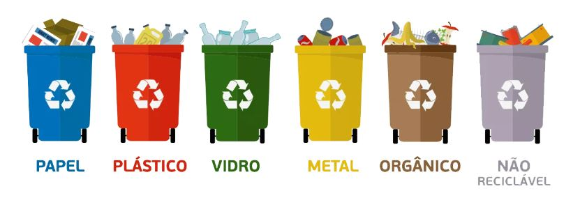

Site desenvolvido para concientização da importâcia da reciclagem
Pensar consciente para um futuro decente!!
Home
Reciclagem no Brasil
Por onde começar a reciclar?
Por que reciclar?

@media only screen and (min-device-width: 481px) and (max-device-width: 1024px) and (orientation:portrait) { body {background: #ffffff} }